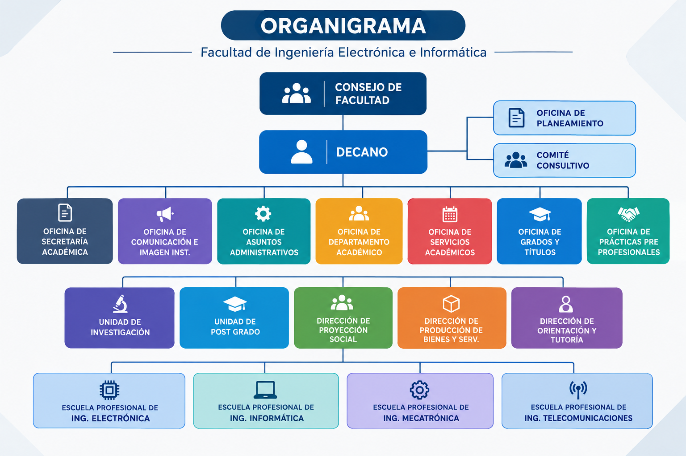

Universidad Nacional Federico Villarreal
Facultad
Conoce nuestra historia, identidad, principios y organización institucional.
Nuestros orígenes
Reseña histórica
El 3 de noviembre de 1997, un grupo de docentes se reunió con el rector de ese año, el arquitecto Santiago Agurto Calvo, presidente de la comisión reorganizadora. La propuesta buscaba crear una Facultad que impulsara el desarrollo tecnológico del país y se convirtiera en una de las facultades clave de la UNFV.
Para elaborar el plan de estudios de Ingeniería Electrónica e Ingeniería Informática participaron, entre otros, el Ing. Darío Biella Bianchi Diamandescu y el Ing. Pedro Heredia Martinetti. La actividad fue promovida mediante la Resolución Rectoral N.º 12682-1997-UNFV.
El funcionamiento de la Facultad de Ingeniería Electrónica e Informática fue aprobado el 30 de marzo de 1998, por Resolución Rectoral N.º 13280-1998-UNFV. Las actividades académicas comenzaron en abril, con el ingreso de 30 estudiantes por especialidad.
Con el tiempo se incorporaron nuevas especialidades, entre ellas Ingeniería de Telecomunicaciones e Ingeniería Mecatrónica, esta última en 2009. La Facultad también fortaleció sus laboratorios de control y automatización, antenas y microondas para acompañar la formación práctica y el desarrollo de proyectos.
Nuestro propósito
Visión y misión
Visión
Ser una Facultad líder en la formación de profesionales y especialistas competitivos, sustentada en el conocimiento científico, la aplicación de las modernas tecnologías de la información y comunicación y los procesos automatizados; cuidadosa del medio ambiente y comprometida con el desarrollo sostenible del país y la sociedad del conocimiento.
Misión
Formar integralmente profesionales competitivos en ingeniería, sobre la base del conocimiento científico; aplicar nuevos procedimientos en información y comunicación, diseñar procesos automatizados y promover la innovación tecnológica al servicio del desarrollo del país.
Principios que nos guían
Valores
Estructura institucional
Organigrama


Selecciona la imagen para verla en tamaño completo o descárgala.
Equipo institucional
Autoridades
Autoridades y responsables de las escuelas y unidades de la Facultad.
Jefes de Oficinas y Unidades